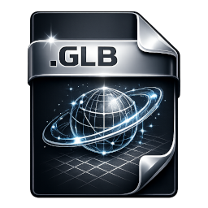
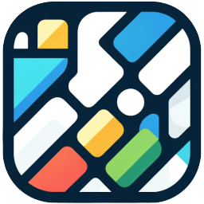

QubitMCP Manual
QubitMCP is a node based workflow tool with a graph canvas, a 3D viewport, and AI plus librarian integrations. This manual covers setup, daily use, and the current node ecosystem.
Overview
What QubitMCP does: connect nodes, process text and AI workflows,
assemble 3D scenes, and export results from a single graph.
- Node graph editor with links, grouping, and per node info cards.
- 3D viewport with camera controls, grid, wireframe, and gizmos.
- AI stack with LLM Prompt, Chatbot, Database, and Librarian.
- 3D stack with import, primitive, texturing, split volume, transforms, scene, and FBX export.
- Configurable hotkeys saved in
hotkeys.json.
Latest Updates
 Gantt Multi-Note Groups
Gantt Multi-Note Groups
- Gantt now supports multiple connected
notesources at once. - Each note node becomes a collapsible group using the note node name as the group header.
- Group expand or collapse state is saved and restored with the workflow.
- Gantt can consume an
appendnode input and preserve append order as group order.
 Copy/Paste Scheduling Between Gantt Nodes
Copy/Paste Scheduling Between Gantt Nodes
- Copy captures task names, completion percentages, and assigned day ranges.
- Copy writes a CSV transfer log in
gantt_chart/transfer_logs. - Paste maps by task name and applies schedule/progress to matching tasks on another Gantt node.
- Transfer works even when the destination chart has additional note groups connected.
 Gantt UI Interaction Polish
Gantt UI Interaction Polish
- Corner action buttons now include hover border feedback.
- Pressed state uses a black background for clearer click confirmation.
- Copy and paste buttons use dedicated icon assets for quick recognition.
Quick Start
- Run setup once with
.\setup.bat. - Launch with
.\run_QubitMCP.bator runechograph_app.pyfrom the project venv. - Create nodes with Create - Node or press Tab.
- Connect outputs to inputs by dragging from one port to another.
- Select a node to edit parameters in the info panel and run its actions.
Setup and Launch
Run from repository root: V:\Source\Repos\QubitMCP.
One time setup
setup.bat- Creates or repairs
.venvfor the app. - Creates or repairs
nodes\librarian\.venvfor librarian service dependencies. - Installs
requirements.txtandnodes\librarian\requirements.txt. - Upgrades packaging tools in each venv (
pip,setuptools,wheel).
Launch app
run_QubitMCP.bator
.\.venv\Scripts\python.exe .\echograph_app.pyOptional venv activation
.\.venv\Scripts\Activate.ps1Activation is optional because scripts call the venv python directly.
UI Tour
Top Bar
- File: New, Open, Open Recent, Save, Save As.
- Create: Add nodes from the node kind list.
- Settings: viewport and UI tuning.
- Hotkeys: edit keyboard and mouse bindings.
- 2D / 3D / Split view mode buttons.
- Frame and Logs utilities.
Main Areas
- Graph Canvas: nodes, wires, and comment frames.
- 3D Viewport: asset preview and scene assembly.
- Info Panel: parameters, buttons, previews, and node tools.
Workflows
- Workflows are saved as JSON.
- Open Recent provides quick access to recently edited workflow files.
- Save preserves graph layout, parameters, links, and related state.
- Hotkey overrides are stored in project root
hotkeys.json.
Graph Basics
Mouse Controls
- Left click: select nodes and start links.
- Middle drag: pan graph.
- Right drag: zoom graph.
- Alt + Left click on a wire: remove wire.
Editing
- Use Tab to open Create Node.
- Copy and paste with standard shortcuts.
- Use comment groups to organize complex graphs.
3D Viewport
- Used by Import, Scene, and scene related processing nodes.
- Supports camera frame, reset, fly mode, and focus workflows.
- Displays mesh and splat assets through the active graph path.
- Scene workflows support per asset transforms and visibility states.
Gizmos and Transforms
- Translate (T), Rotate (R), Scale (E).
- Applies to selected items in the viewport and scene workflows.
- Transform data participates in scene assembly and export chains.
Viewport Controls
- Grid toggle for orientation and scale reference.
- Wireframe toggle, default hotkey H.
- Gizmo visibility toggle for clean previews.
- Snapshot capture tools for scene reviews.
Hotkeys (Default)
All bindings are editable in the Hotkeys dialog and persisted to hotkeys.json.
| Action | Key |
|---|---|
| Save | Ctrl+S |
| Undo / Redo | Ctrl+Z / Ctrl+Y |
| Copy / Paste Node | Ctrl+C / Ctrl+V |
| Delete Node | Del |
| Create Node Menu | Tab |
| Comment Group | C |
| Open Big Editor | Ctrl+B |
| View Selected Node (Import/Scene) | V |
| Frame View | F |
| Reset 3D View | Shift+R |
| Gizmo Translate / Rotate / Scale | T / R / E |
| Wireframe Toggle | H |
| Grid Toggle | G |
| View Mode 2D / Split / 3D | 1 / 2 / 3 |
| Add Wire Pin | Ctrl+LeftClick |
| Remove Wire | Alt+LeftClick |
Settings
- LLM Scale: scales LLM node presentation.
- Pan Base / Pan Exp / Pan Boost: viewport panning response.
- Gizmo Zoom: transform tool sensitivity.
- Debug Log: diagnostic logging toggle.
Node Catalog
Current kinds available from Create Node and plugin registration.
Core and Utility
 note: note tasks and text content with per-parameter controls.
note: note tasks and text content with per-parameter controls. node: general purpose parameter node.
node: general purpose parameter node. append: ordered input aggregation; can now drive Gantt group order.
append: ordered input aggregation; can now drive Gantt group order. switch: single-branch selection from multiple upstream nodes.
switch: single-branch selection from multiple upstream nodes.- gantt_chart: scheduling board with multi-note grouping, collapse state persistence, and CSV copy/paste transfer.
 python: run custom scripts in graph context.
python: run custom scripts in graph context. output: terminal collector for final graph output.
output: terminal collector for final graph output.
AI and Knowledge
 llm: provider and endpoint configuration.
llm: provider and endpoint configuration.- llm_prompt: prompt execution and response generation.
 chatbot: conversation workflows with memory/history support.
chatbot: conversation workflows with memory/history support. database: persistence layer for graph and chat data.
database: persistence layer for graph and chat data. librarian: document indexing, search, summarize, and analysis.
librarian: document indexing, search, summarize, and analysis.
Media and Review
- html_preview: in-node HTML rendering.
 image_collection: assemble and preview image sets.
image_collection: assemble and preview image sets. video_player: timeline playback and clip inspection.
video_player: timeline playback and clip inspection. render: render sequence/export pipeline stage.
render: render sequence/export pipeline stage.
3D and Scene Processing
 import: load mesh or splat assets.
import: load mesh or splat assets. camera: scene camera placement/control node.
camera: scene camera placement/control node. instance: create repeated scene instances.
instance: create repeated scene instances.
primitive: generate procedural primitive geometry. uv_unwrap: UV workflow stage.
uv_unwrap: UV workflow stage. texture: base texturing stage.
texture: base texturing stage.
texture_pro: expanded texture processing controls. texture_layer: layered texture compositing.
texture_layer: layered texture compositing. material: material setup and conversion utilities.
material: material setup and conversion utilities. split_volume / volume_selector: filter/split geometry by volume.
split_volume / volume_selector: filter/split geometry by volume. transforms: apply translate/rotate/scale offsets in-chain.
transforms: apply translate/rotate/scale offsets in-chain. fx: post-process and trail-style pipeline stage.
fx: post-process and trail-style pipeline stage. wire: wire and curve-based geometry path workflows.
wire: wire and curve-based geometry path workflows. ply_sequence: sequence playback/control for PLY streams.
ply_sequence: sequence playback/control for PLY streams. scene: assemble and manage multi-asset scenes.
scene: assemble and manage multi-asset scenes. export_fbx: export to FBX.
export_fbx: export to FBX. export_obj: export to OBJ/MTL.
export_obj: export to OBJ/MTL.
Aliases also exist for some node kinds (for example scene_assembly, scene_outliner, exportfbx, and video player).
Common Pipelines
Scene Assembly and Export
- Create
importorprimitivenodes. - Optional processing:
uv_unwrap,texture/texture_pro/texture_layer,split_volume,transforms. - Use
instancewhen you need repeated assets. - Connect into
sceneand review in 3D viewport. - Finish with
export_fbxorexport_objfor DCC handoff.
Librarian and LLM Workflow
- Create
librarianand set docs path. - Build or load librarian index and run search or summarize.
- Use
llm_promptorchatbotfor response generation. - Attach
databasefor persistence andappendplusoutputfor final aggregation.
Task Planning Workflow (Gantt)
- Create one or more
notenodes with task parameters. - Optional: combine notes through
appendand use append order to control Gantt group order. - Connect to
gantt_chartand assign dates or progress per task row. - Use collapse or expand on note groups to focus planning.
- Use copy/paste buttons to transfer schedule + progress into another Gantt chart instance.
Troubleshooting
- Setup issues: check
setup.logat repo root after runningsetup.bat. - Librarian launch issues: run
nodes\librarian\librarianSetup.batand reviewnodes\librarian\librarian_child.logandnodes\librarian\librarian_crash.log. - Hotkey mismatch: open Hotkeys dialog and confirm bindings, or regenerate
hotkeys.json. - Wireframe default is
H; if not, verifygl_wireframe_toggleinhotkeys.json. - Gantt copy/paste debugging: inspect CSV transfer logs under
gantt_chart\transfer_logs. - If Gantt group order is stale after append reorder, press Apply Order on the append node so downstream charts refresh.
Developer Guide (High Level)
- Node specs are registered through
nodes/coreand plugin bootstrap innodes/loader.py. - Create Node kinds are defined in
echograph/ui/dialogs.py. - Hotkey defaults are in
echograph/ui/hotkeys_config.pyand merge with roothotkeys.json. - Workflow files persist graph structure and node parameters as JSON.
- Librarian service runs out of
nodes/librarian/.venvas a separate process.